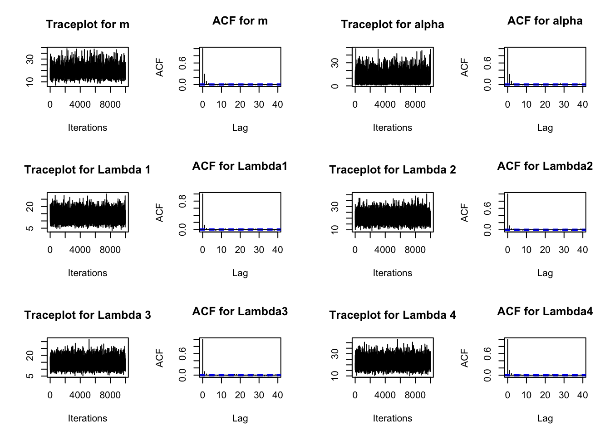
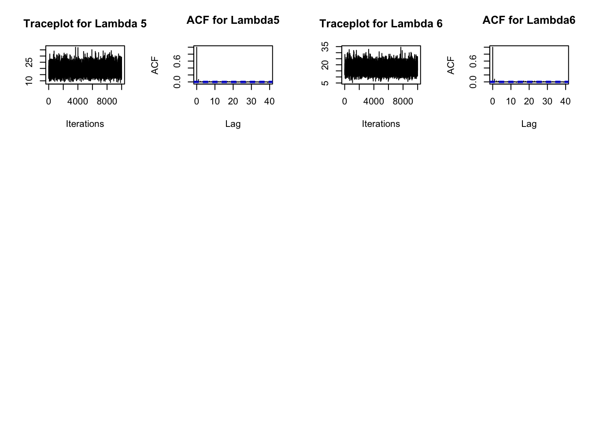
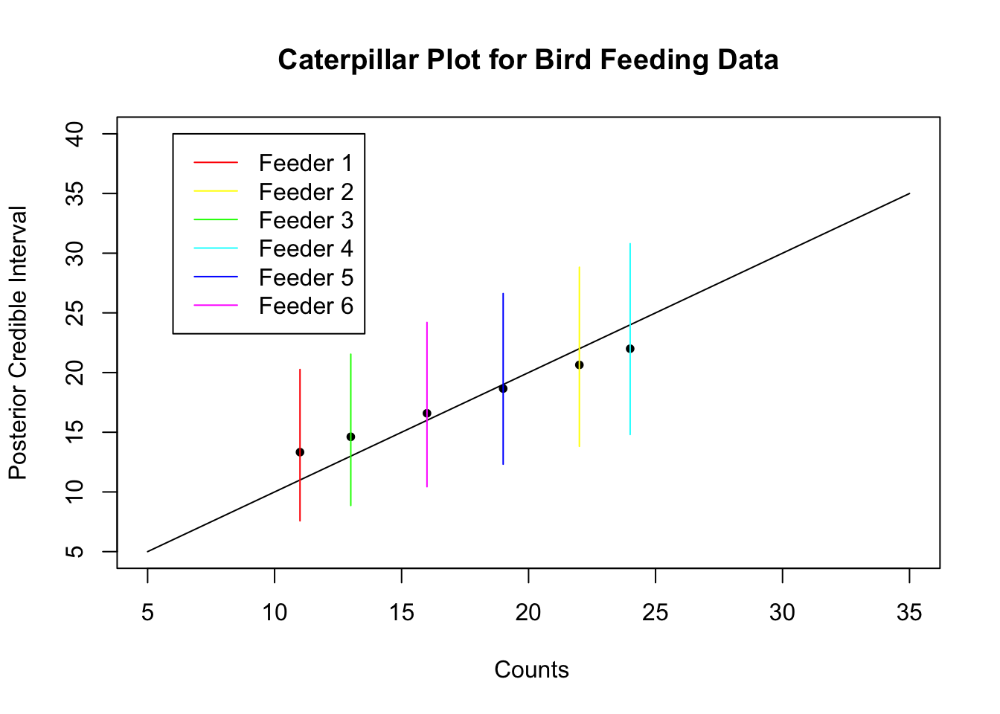
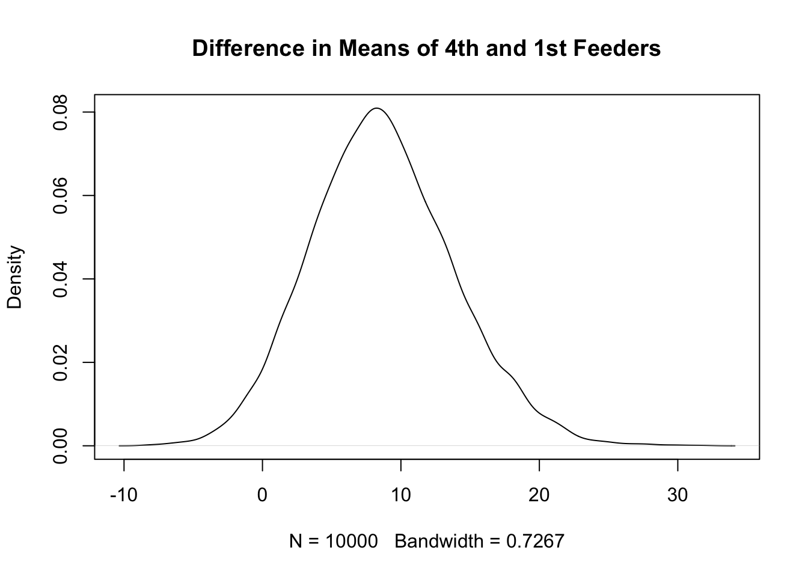

Exercise 1 (Gibbs: Bird feeders) A biologist counts the number of sparrows visiting six bird feeders placed on a given day.
Feeder
Number of Birds
1
11
2
22
3
13
4
24
5
19
6
16
Assume that the bird counts are independent Poisson random variables with feeder- dependent means \(\lambda_i\), for \(i=1,\ldots,6\).
Assume that the means \(\lambda_i\) are independent and identically distributed gamma random variables with shape \(a\) and scale \(b\) (or equivalently, shape $a and mean \(m = ab\) )
The mean \(m = ab\) of the Gamma distribution is uniformly distributed on a grid of 200 equally spaced values starting at 5 and ending at 40.
The shape \(a\) is independent of the mean \(m\) and has a distribution that takes values on a grid of 200 equally spaced points starting at 1 and ending at 50, with prior probabilities proportional to a gamma density with shape \(1\) and scale \(5\).
Use Gibbs sampling to draw 10000 samples from the joint posterior distribution of the mean \(m\), the shape parameter \(a\), and the six mean parameters \(\lambda_i\), \(i=1,\ldots,6\), conditional on the observed bird counts. Using your sample, calculate 95% credible intervals for the mean m, the shape a, and the six mean parameters \(\lambda_i\), \(i=1,\ldots,6\).
Find the effective sample size for the Monte Carlo samples of the mean \(m\), the shape parameter \(a\), and the six mean parameters \(\lambda_i\), \(i=1,\ldots,6\). The Effective Sample Size (ESS) in Markov Chain Monte Carlo (MCMC) is a measure of the information content or effectiveness of a sample chain. It quantifies how many independent samples would be equivalent to the samples obtained from an MCMC process, which inherently produces correlated samples due to its Markovian nature. Simply speaking, it is the sample size adjusted for autocorrelation. ESS is typically calculated using the formula:
\[ ESS = n \frac{\lambda^2}{\sigma^2} \]
\(n\) is the actual number of samples,
\(\lambda^2\) is the variance of the samples if they were independent (often referred to as the “lag-zero” variance),
\(\sigma^2\) is the variance of the sample mean, which includes the effects of autocorrelation among the samples.
In practice, \(\sigma^2\) can be estimated using the autocovariance function of the Markov chain, which accounts for the correlations between samples at different lags. You can use the effectiveSize function in the coda package to calculate the effective sample size.
Do traceplots for the mean m, the shape parameter a, and the six rate parameters \(\lambda_i\), \(i=1,\ldots,6\). You can use the traceplot and acf functions in the coda package to create traceplots and autocorrelation functions. Discuss the results.
The fourth feeder had the highest bird count and the first feeder had the lowest bird count. Use your Monte Carlo sample to estimate the posterior probability that the first feeder has a smaller mean bird count than the fourth feeder. Explain how you obtained your estimate.
Discuss your results.
Solution:
A plate diagram for this problem is shown below:
Gibbs sampling on this model can be done as follows:
numSim <-10000# number of Monte Carlo samples# Set up discretized grid of prior virtual mean and prior virtual shapegridsize=200mGrid =seq(from=5,to=40,length=gridsize) # prior dist for mean of Gamma distmPrior =array(1/gridsize,gridsize)aGrid=seq(from=1,to=50,length=gridsize) # prior dist for shape of Gamma distaPrior=dgamma(aGrid,shape=1,scale=5)aPrior=aPrior/sum(aPrior)
Initialize \(m^{(0)}\) and \(\alpha^{(0)}\). Any initial values will do, but I used the empirical Bayes estimates \(m^{(0)}=17.3\) (average of the observations) and \(\alpha^{(0)}=10.48\) (square of mean of observations divided by variance of observations). I did not initialize the \(\lambda_{i}\) because they are sampled before they are needed.
# Empirical Bayes estimates of mean and shapemeb =mean(birdcounts) # initial guess at meanab2 =var(birdcounts) # estimate of variance = alpha * beta^2 aeb = meb^2/ab2 # initial guess at shape = mean^2 / variance# Initialize Gibbs sampler with empirical Bayes estimates# (Initial value can be any value. An alternative would be to sample# randomly from the prior distribution)mPrev=mebaPrev=aebbPrev=mPrev/aPrevlambdaMC <-array(0, dim=c(numSim,length(birdcounts))) # Allocate space for Gibbs sample aMC=mMC=NULL# Variable to hold mean and shape
We use conjugacy to calculate the posterior shape \(\alpha_{i}^{*}=\left(\alpha^{(k-1)}+ Y_{i} \right)\) for the \(i^{\text {th }}\) feeder, \(\beta_{i}^{*}=\left(m^{(k-1)} / \alpha_{i}^{(k-1)}\right)^{-1}\) for the \(i^{\text {th }}\) feeder. Then we simulate \(\lambda_{i}{ }^{(k)}\) from a gamma distribution with shape \(\alpha_{i}^{*}\) and scale \(\beta_{i}^{*}\).
Next, \(p(m\mid \alpha^{(k-1)},\lambda_{1}{k},\ldots\lambda_{6}{k})\) is the prior times likelihood for each possible value of \(m\). Because the prior is uniform, this is the product of the six Gamma likelihoods. Then divide by sum of prior times likelihood.
To find \(p(\alpha \mid m^{(k)}, \lambda_{1}^{(k)},\ldots, \lambda_{6}^{(k)})\) find the prior times likelihood for each possible value of \(\alpha\) and normalize to sum to 1. The result of this process is the requested sample.
Now sample, for \(k=1, \ldots, 10,000\) :
# Gibbs samplerfor (k in1:numSim) {#Sample lambdas alpha1 <- aPrev + birdcounts # posterior alpha beta1 <- (1/bPrev +1)^-1# posterior beta lambdaMC[k,] <-rgamma(length(birdcounts),alpha1,scale=beta1) # simulate new lambdas#Sample means mLik <-1# Initialize likelihood for meanfor (j in1:length(birdcounts)) { mLik <- mLik*dgamma(lambdaMC[k,j],shape=aPrev,scale=mGrid/aPrev) } mPost <- mPrior*mLik/sum(mPrior*mLik) mMC[k] <-sample(mGrid,1,prob=mPost) # sample value of mean aLik <-1# Initialize likelihood for shapefor (j in1:length(birdcounts)) { aLik <- aLik*dgamma(lambdaMC[k,j],shape=aGrid,scale=mMC[k]/aGrid) } aPost <- aPrior*aLik/sum(aPrior*aLik) aMC[k] <-sample(aGrid,1,prob=aPost) # sample value of shape aPrev = aMC[k] # Set prior shape for next round bPrev = mMC[k]/aMC[k] # Calculate prior scale for next round}
The table below shows credible intervals calculated from the raw Gibbs samples and credible intervals from a thinned sample with interval 3 (that is, only every third sample is kept). The intervals are almost the same. Due to sampling variation, the intervals will be different each time the sampler is run but your results should be similar.
# Credible intervals (using full sample)ci =function(thin=None) { int=matrix(nrow=length(birdcounts)+2,ncol=2) # Store credible intervalsfor (i in1:length(birdcounts)) { int[i,]=quantile(lambdaMC[thin,i],c(0.025,0.975)) }# Credible intervals for alpha and m int[7,] =quantile(aMC,c(0.025,0.975)) int[8,] =quantile(mMC,c(0.025,0.975))rownames(int) =c(paste("lambda",1:6), "alpha", "m")return(round(int,2)) }ci(birdcounts)
In general, thinning increases the variance of the estimator (because we are throwing away information), but has other advantages: (1) it reduces data storage; (2) it reduces computation for any post-processing of the Monte Carlo samples; (3) it allows use of data processing methods intended for independent and identically distributed data, without having to adjust for the correlation.
It is also common to discard a burn-in sample when doing MCMC. I did not require either thinning or discarding a burnin sample.
The effective sample sizes for my simulation are shown in the table below. Yours should be similar.
As usually happens, the higher level hyperparameters have smaller effective sample sizes. All effective sample sizes are large enough for good estimates of the posterior distribution.
The traceplots below show a stationary chain. It looks stable from the very beginning, which justifies not discarding a burnin sample. I also plotted autocorrelation functions. They show some autocorrelation, mostly disappearing by lag 3 or 4 . (That is why I chose a thinning interval of 3 .)
par(mfrow=c(3, 4))traceplot(as.mcmc(mMC),main="Traceplot for m")acf(mMC,main="ACF for m")traceplot(as.mcmc(aMC),main="Traceplot for alpha")acf(aMC,main="ACF for alpha")for (i in1:length(birdcounts)) {traceplot(as.mcmc(lambdaMC[,i]),main=paste("Traceplot for Lambda",i))acf(lambdaMC[,i],main=paste("ACF for Lambda",i,sep=""))}


To estimate the probability that the fourth feeder has higher mean than the first feeder, we count the number of times, out of our sample of 10,000 , that the fourth sampled mean \(\lambda_{4}{ }^{(k)}\) is larger than the first sampled mean \(\lambda_{1}{ }^{(k)}\). In a run that I did, this happened 9634 times, giving an estimate of \(96.3 \%\) as the probability that the first feeder had a smaller mean than the fourth.
# Estimate probability that 4th feeder has higher mean than first feedersum(lambdaMC[,4]>lambdaMC[,1])/numSim
[1] 0.9626
To summarize the results, the Gibbs sample is reasonably stationary with autocorrelation that disappears after about lag 3. The effective sample sizes are high enough for reasonably accurate estimates of the posterior distribution. All the intervals overlap, but there is fairly strong evidence that the feeders have different mean arrival rates. A caterpillar plot of Gibbs sampling intervals and kernel density plots of the five density functions are shown below. I used 40,000 samples to get more accurate intervals and smoother density functions. We can see the shrinkage of the five estimates toward the overall grand mean. These plots allow us to
feederColors =rainbow(length(birdcounts))# Plot posterior intervals and show shrinkagepar(mfrow=c(1, 1)) # back to single plotgibbsMean <-colSums(lambdaMC)/numSimplot(birdcounts,gibbsMean,xlab=" Counts",ylab="Posterior Credible Interval",main="Caterpillar Plot for Bird Feeding Data",xlim=c(5,35), ylim=c(5,40), pch=20)lines(c(5,35),c(5,35)) # diagonal line y = xth025 <-NULLth975 <-NULLfor(i in1:length(birdcounts)) { th025[i]<-quantile(lambdaMC[,i],0.025) th975[i]<-quantile(lambdaMC[,i],0.975)lines(c(birdcounts[i],birdcounts[i]),c(th025[i],th975[i]),col=feederColors[i]) # Gibbs intervals}legend.names=paste("Feeder",1:length(birdcounts))legend(6,40, legend.names, col=feederColors,lty=rep(1,length(birdcounts)))

A kernel density plot of the difference between the means of the fourth and the first feeder shows clearly that, althought the credible intervals overlap, most of the probability mass of the difference is larger than zero. The reason that there is so much overlap in the intervals even though there is a high probability that the means are different is due to correlation - both of the feeder means depend on \(m\) and will vary together.
# Plot kernel density estimator of differenceplot(density(lambdaMC[,4]-lambdaMC[,1]),main="Difference in Means of 4th and 1st Feeders")

These results will be similar, but not exactly the same, if this process is repeated. I ran the sampler several times with 40000 samples, and the results had less variation.